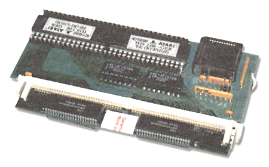

| |

Magnum Speicherkarten


Mit den Magnum RAM-Karten kann man die unterschiedlichen
Atari-Modelle mit einer Speichererweiterung versehen. Der Einbau einer
Magnum-Ram Karte setzt technisches Verständniss voraus. Der
Einbau erfolgt bei jedem Atari Computer auf einer bestimmten Art &
Weise die Sie aus der entsprechenden Einbauanleitung entnehmen.

Abbildung 1 - Magnum ST Ram Karte
Magnum Ram Boards are avaiable for differend Atari Computers.
Fitting of these boards can be made by any person with technical mind.
Any board can be fitted without soldering. Take special tips for any
board out of the manual delivered with the ram boards.
- ST und MegaST
- Kann auf 12 MB - Ram erweitert werden. Der Einbau ist sie voll
steckbar - Löterfahrung ist hier nicht unbedingt notwendig. Die
Magnum wird mit handelsüblichen PS/2-Modulen ausgerüstet.
Supports an maximum of 12 MB Ram. Fitting is done only by plug in.
No soldering. Magnum board use normal PS/2 Ram modules.
Zusätzlich kann die Karte TOS 2.06-ROM's aufnehmen.
This Magnum board also can use TOS 2.06 Roms.
Ausführungen:
MagnumST Leerkarte
MagnumST inkl. 8 MB Ram
MagnumST inkl. 8 MB und TOS 2.06
- MegaSTE
- Der MegaSTE kann mit dieser Version der Magnum Karte ebenfalls
bis auf 12MB Arbeitsspeicher ausgerüstet werden. Diese Version
ist auch mit PS/2-Modulen bestückt und ist voll steckbar.
MegaSTE can use this board too. Any MegaSTE can be expanded up to
12 MB Ram. This board is fitted only by plug in, needs no soldering.
Die MagnumSTE kann leider nicht im 520STE oder 1040STE eingebaut
werden!
MagnumSTE can't be used in 520STE or 1040STE!
Ausführungen:
MagnumSTE Leerkarte
MagnumSTE inkl. 8 MB
- Falcon
- Der Falcon hat schon ab Werk 4 MB Speicher oder aber auch 14 MB
Speicher.
Die MagnumFalcon nutzt daher den interne Systembus und wird auf
diesen Port aufgesteckt. Ein Falcon erhält durch diese
Erweiterung schnelles Fast-RAM.
Die Magnum für den Falcon ist ausschliesslich
vollständig steckbar und wird mit herkömmlichem PS/2 Ram
bestückt.
Ausschliesslich mit der Nova-Grafikkarte, zusammen mit der Magnum,
sind mehr als 4 MB Speicher nutzbar!
Any Falcon used 4 MB or 14 MB Ram. Some Falcons are deliverd with
14 MB Ram. MagnumFalcon is pluged to the internal Systembus and add
FAST-Ram to the System. MagnumFalcon is only als plug in unit
avaiable. The board used normal PS/2 Ram Modules. With Magnum and NOVA
Grafik Board are more as 4 MB RAM usable!
Ausführungen:
Magnum Falcon inkl. 8 MB
- Atari TT
-
Die Magnum Karte für den Atari TT stellt diesem Rechner
schnelles Fast-RAM bis 512 MB zur verfügung. Die MagnumTT ist
voll steckbar und wird auf den FAST-RAM Port aufgesteckt. Die Karte
bietet 2 Steckplätze für zwei PS/2-Speichermodule.
Unter SVR4 kann es sein, daß beide Bänke der Karte
bestückt sein müssen.
You need 5V SIMMs, either FPM or EDO. The modules must have a
symmetrical RAS/RAS mapping.
3.3V DRAMs may well not work - often, these have a "V"
in rthe middle of the type number, or start with "HYB31",
but to be sure, you have to look up the exact datasheet.
When using different sized modules, the bigger module must be in
bank 0.
On old TT models with the CPU on a daughterboard, you may have to
enable an additional wait state. In that case, change the jumper from
0WS to 1WS.
If the presence detection pins on the modules are wired correctly,
you need no jumpers on any of the PD jumper positions - these are just
a fallback in case of badly designed modules, which shows as a module
being detected with the wrong size.
I talked to Uwe Schneider (the developer) about the problem of not
recognizing 128MB modules. Besides the symetrical issue there is a
problem with the coding of the SIMM sizes. There are 2 different ways
128MB was coded at the time.
MagnumTT uses:
128MB PD0 and PD1 open.
Many SIMMS use PD0=0 PD1=1.
Just remove the PD1 0 Ohm resistor and it should work. It did for
me.
Auf einer Magnum TT Karte können 16MB, 32MB, 64MB oder 128MB
PS2-SIMM Module (F)ast (P)age (M)ode oder auch EDO) eingesetzt werden.
Es ist darauf zu achten, daß es sich immer um -symmetrische-
Module handelt.
Setzen Sie SIMM-Modul(e) einfach in den Sockel der Magnum TT Karte
ein. Die Größe des Moduls wird automatisch erkannt. Wenn
ein SIMM-Modul falsch erkannt werden sollte, sind auf dem Ram Modul
die Brücken zur Größenkodierung nicht korrekt
bestückt. Dazu müsten dann die Jumper PD00/PD10 bzw. PD01/11
auf der Magnum-Karte wie umgesteckt werden.
Es gibt leider auch asymmetrische Speichermodule auf dem Markt,
die auf einer Magnum TT Karte leider nicht funktionieren. Diese Module
kann man nur an der Bezeichnung der Bausteine auf dem Modul erkennen.
Größe Anz. Bezeichnung
16MB 8 xx1740x richtig
xx1640x falsch
16MB 2 xx6516x richtig
xx6416x falsch
32MB 16 xx1740x richtig
xx1640x falsch
32MB 4 xx6516x richtig
xx6416x falsch
64MB 8 xx6540x richtig
xx6440x falsch
128MB 16 xx6540x richtig
xx6440x falsch
Taucht in der Chip-Bezeichnung ein "V" auf oder die Chip
Bezeichnung von z.B Siemens Bausteinen fängt mit
"HYB31" an, ist vorsicht geboten. Es sind dann 3.3 V Module.
Die Arbeiten nicht und werden zerstört. Die Magnum-Karte
benötigt immer 5 Volt Module!
Beim Einsatz von zwei unterschiedlich großen Speichermodulen
ist das größere in Bank 0 und das kleinere in Bank 1
einzusetzen. In den ersten TT-Modellen, das sind die mit einem
Daughterboard für den Prozessor, kann es sein, daß
zusätzliche Waitstates einfügt werden müssen. Hierzu
wird der Jumper von 0WS auf 1WS gesetzt.
MagnumTT add FAST Ram with an maximum size of 512 MB Ram to any
Atari TT. The board work simple by plug in to the internal FAST-RAM
connector. Magnum Board contain two slots for normal PS/2 Ram Modules.
Ausführungen:
MagnumTT Leerkarte
MagnumTT inkl. 16 MB
MagnumTT inkl. 32 MB
MagnumTT inkl. 64 MB
|